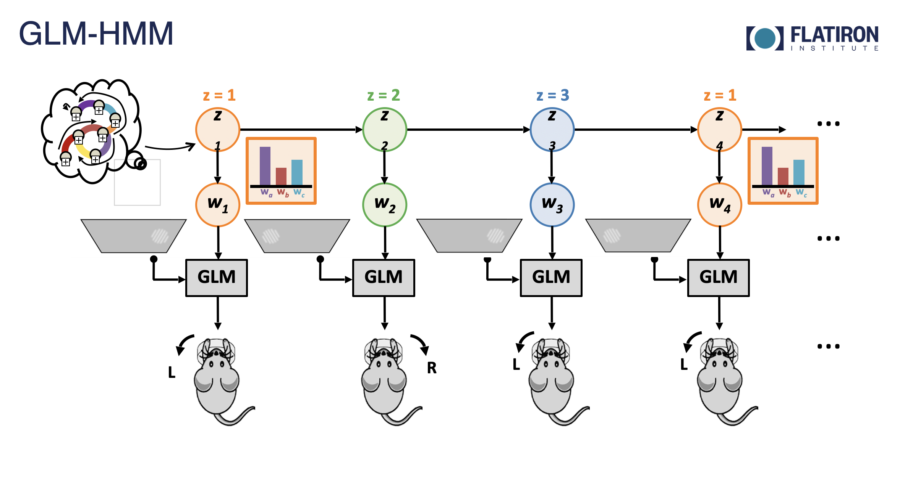
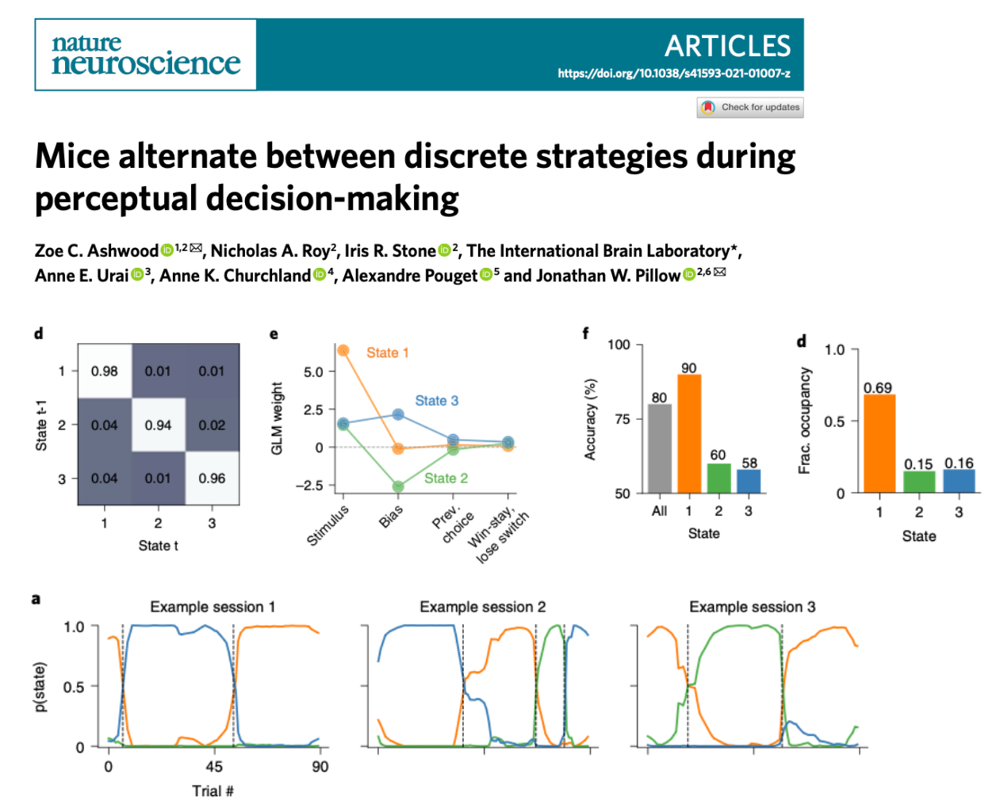
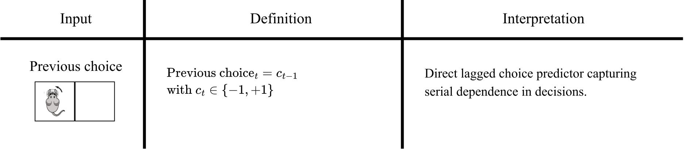
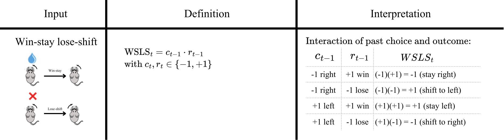
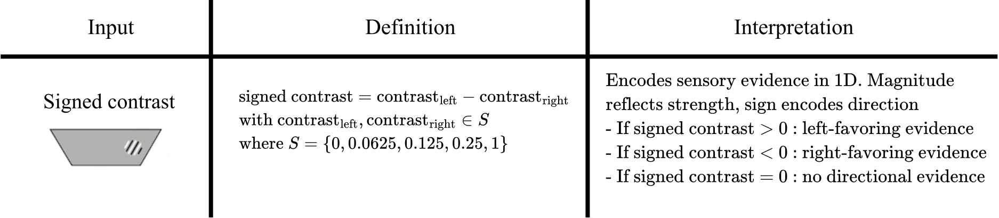
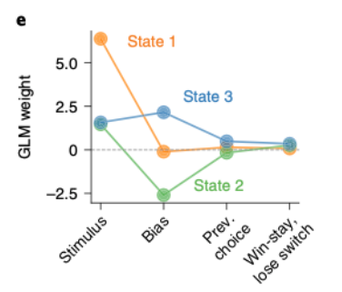
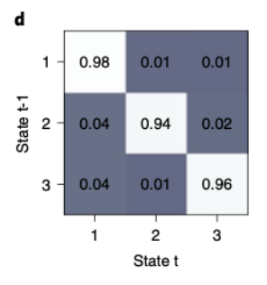
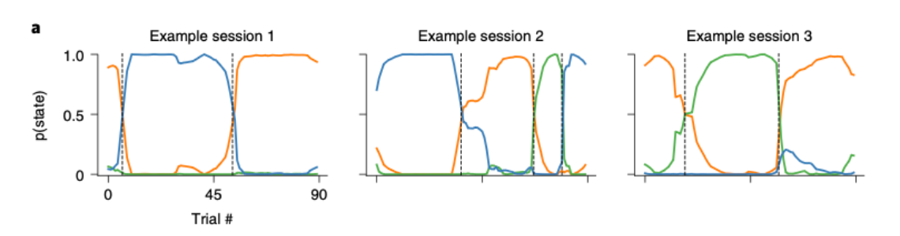
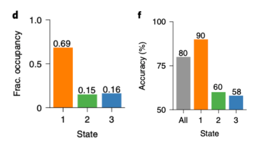

import warnings
warnings.filterwarnings(
"ignore",
message="coroutine .* was never awaited",
category=RuntimeWarning,
)
Jupyter Lab Reminders
Reminder to presenter: Go to View > Appearance, select Simple Interface and turn off everything else to hide as many bars as possible. And maybe activate Presentation Mode.
And turn on View > Render side-by-side (shortcut Shift+R).
Infer behavioral strategies during decision making with GLM-HMMs#
This notebook has had all its explanatory text removed and has not been run. It is intended to be downloaded and run locally (or on the provided binder) while listening to the presenter’s explanation. In order to see the fully rendered of this notebook, go here
In this notebook, we will learn how to model behavioral choices by fitting a GLM-HMM.
Introduction#
Behavioral choices: dataset#
Data for this notebook comes from the IBL decision-making task (IBL et al., 2021) [1a], a variation of the two-alternative forced-choice perceptual detection task (Burgess et al., 2021 [2a]).
During this task, a sinusoidal grating with varying contrast [0%-100%] appeared either at the right or left side of the screen. The mice indicated this side by turning a small wheel, which moved the stimulus toward the center of the screen (Burgess et al., 2021 [2b]). If the mice chose the side correctly, they would receive a water reward; if not, they would get a noise burst and a 1-second timeout. For the first 90 trials of each session, the stimulus appeared on the left or right side with 50% probability and then this probability shifts, biasing towards one side or the other, alternating randomly every 20–100 trials.
You have already been introduced to the behavioral experiment and the model with sarah, so i will just give you a quick reminder
the behavioral choices for this tutorial come from the IBL. In particular, from a mouse completing the IBL decision-making task.
variation of the two-alternative forced-choice perceptual detection task
sinusoidal grating with varying contrast appeared either at the right or left side of the screen.
Mice had to indicate where it appeared
If the mice chose the side correctly, they would receive a water reward; if not, they would get a noise burst and a 1-second timeout.
For the first 90 trials of each session, the stimulus appeared on the left or right side with 50% probability
then this probability shifts, biasing towards one side or the other, and it alternated randomly every 20–100 trials.

Task illustration. Modified from IBL et al. (2021) [1b].
GLM-HMM#
In terms of the model, just as a quick refresher, GLM-HMMs are models which include a HMM component and a GLM component.
The HMM component indicates the distribution over the latent states z
and the glm component is really composed state-specific GLMs, as many glms as states, which specify the activity of the system at each state.
we can see in the screen a graphic that shows how it works, which you have already seen.
Here we can see the hidden states, hidden behavioral states in our case, z. then the weights, which are what defines a glm, depend on these hidden states.
As you have already seen with how a regular glm works, these weights are combined with some inputs in a design matrix,
and this linear transformation is then passed by a non linearity, which is used as the parameter of our observation model, which in turn outputs the result.
In our case, the result are binary choices :left or right, so we will use a Bernoulli, so we have a bernoulli glm-hmm.
These characteristics allow us to fully describe HMMs by three elements: 1 initial probabilities 2. transition probabilities 3. emission probabilities
Initial probabilities tell you the probability distribution of the first state being one or th eother
Transition probabilities tell you how the states evolve over time
Emission probabilities, the relationship between the state and the observation.
It is quite interesting because with different uses of these three components we can actually gather quite a lot of information about how behavior unfolds over time.
GLM-HMMs are composed by a an HMM component governing the distribution over the latent states, and state-specific GLMs, which specify the activity of the system at each state.

Graphical model” of a GLM-HMM with mouse actions.
We can fully describe a system by three elements:
Initial probabilities: probability distribution of the first state.
Transition probabilities: how the states evolve over time
Emission probabilities: relationship between state and observation
How will we learn?#
We will replicate the main findings of Ashwood et al. (2022) [3a].

Tutorial sections#
Download and preprocess the data
Build a design matrix with three predictors
Fit the model
Interpret the results
01. Download and preprocessing of data#
What do we want to do in this subsection?
Download the dataset
See what it contains
Select the sessions we are interested in
Data Streaming#
Let’s download the data using Open Neurophysiology Environment (ONE)
We will download the data from this task using Open Neurophysiology Environment (ONE).
This is a protocol for standardizing, searching and sharing neurophysiology data.
On the one hand it defines conventions for how to store and share neurophysiology data and
on the other it provides an API to search and load datasets which can be stored on a remote server or local machine.
We will use this to download data from the International Brain Laboratory.
(API: stands for application programming interface, is a set of protocols that enable different software components to communicate and transfer data)
First we run this
We are getting all of our imports to run the code
For the 64-bit floating point: By default, JAX uses 32-bit precision (float32) because it is faster and more memory-efficient, especially on GPUs and TPUs. However, when dealing with a glm-hmm we compute quantities a bunch of times and some of those quantities are very small numbers. So with float64 we just guarantee more numerical stability i.e avoid small numerical errors to propagate.
And helper plotting functions
JAX is nemos backend - many operations in nemos are performed using jax. we might want to change the global setting of jax as this affects how nemos performs computations
# Imports
import seaborn as sns
import matplotlib.pyplot as plt
import os
import numpy as np
from one.api import ONE
import nemos as nmo
import workshop_utils
import jax
# Enable 64-bit floating-point and integer types
jax.config.update("jax_enable_x64", True)
# Plotting params
custom_params = {"axes.spines.right": False, "axes.spines.top": False}
sns.set_theme(style="ticks", palette="colorblind", font_scale=1.5, rc=custom_params)#, context="notebook")
First we setup our ONE object using the setup function.
This function (more precisely class method) creates or updates the local configuration used by one. - It stores information such as which server to connect and authentication details.
Here we are specifying we want to connect to the international brain laboratory database.
We are also saying we want to set the silent keyword argument to True, to suppress interactive messages
we run this
# Configure
ONE.setup(
base_url='https://openalyx.internationalbrainlab.org',
silent=True
)
Now we are setting where we want our data to be download, if we run and print it we will get a directory.
# Set up where we want our data to be downloaded
data_dir = os.environ.get("NEMOS_DATA_DIR")
print("IBL data dir:", data_dir)
Then we initialize our ONE object. We pass it “international” as a password, which is used to authenticate the alyx server we just connected to. This allows ONE to log in and access datasets that require authentication
with cache_dir we are specifying where we want the data to be stored locally. When a dataset is requested, ONE first checks whether it already exists in the cache directory. If not, it downloads it and saves it here.
# Instantiate ONE object
one = ONE(password = 'international', cache_dir=data_dir)
Next, we load the behavioral data for one subject from the IBL aggregate dataset.
let’s run this
and see what we have: we are choosing this particular subject because this is the mouse used in the original paper for most their figures.
then the
load_aggregatefunction retrieves a preprocessed table containing trial-by-trial information,we can see that our output is a pandas dataframe
common in python for representing and analyzing tabular data
# Then we need to choose our subject and run load_aggregate
subject = "CSHL_008"
trials = one.load_aggregate('subjects', subject, '_ibl_subjectTrials.table')
# We can see the type of object we are dealing with
print(type(trials))
we can see how it looks. we scan see that it has one row per trial and one column per measured variable.
# We can see how it looks like
trials.head(5)
Working without pynapple
Unlike the other notebooks in this workshop, here we work directly with pandas DataFrames and numpy arrays rather than pynapple objects. The IBL trial data is trial based, with no continuous time axis. Pynapple would not represent this well, so we keep it as a DataFrame and show how NeMoS interfaces with plain NumPy. NeMoS also accepts pynapple Tsd/TsdFrame objects directly, and we point out as we go where that would change the workflow (for example, how session boundaries are handled).
The IBL data that we have here is trial based, with no continuous time axis so Pynapple would not represent it well\
we will work with pandas dataframes and numpy arrays rather than pynapple
we will show how nemos works with plain numpy, a standard python data science packages
but bare in mind that nemos also supports pynapple for this mmodule. however, small parts of the analysis would vary, so i will let you know where things would be a little bit different if that was the case
And by printing the columns we see all the information we could gather
# We can see the information we get by printing the columns
trials.columns
We are modeling choice as result of observables and behavioral state, so we need choice, contrastLeft, contrastRight and feedbackType. Additionally, we want to keep the information of the probability of the stimulus appearing in a given position, probabilityLeft since this changes within a session, and the session ids to know when sessions start and end.
Let’s extract what we need, and inspect its contents.
So here, we just subset choice, contrast at each side, reward information, probability of stimulus appearing on the left and session, and afterwards we simply have print statements with the sorted values that we get and the types of values that we get.
here -1 corresponds to a choice to the right, 0 to an invalid trial and 1 to a leftward choice. this is an integer
contrast left and and right correspond to the contrast of the stimulus presented. we have some nan values here because nan indicates that no stimulus was presented on that side. in reality it means the same as having 0 contrast
a reward of -1 indicates the mouse made the wrong call, whilst a reward of 1 means they made the right call.
probability of stimulus on left can take many values between 0 and 1. we will later subset only the ones corresponding to .5
session values are strings of numbers
trials = trials[
[
"choice", "contrastLeft", "contrastRight",
"feedbackType", "probabilityLeft", "session"
]
]
print(f"choice \nvalues: {np.sort(trials.choice.unique())}, data type: {trials.choice.dtype} \n")
print(f"contrast left \nvalues: {np.sort(trials.contrastLeft.unique())}, data type: {trials.contrastLeft.dtype} \n")
print(f"contrast right \nvalues: {np.sort(trials.contrastRight.unique())}, data type: {trials.contrastRight.dtype} \n")
print(f"reward \nvalues: {np.sort(trials.feedbackType.unique())}, data type: {trials.feedbackType.dtype} \n")
print(f"probability of stimulus on left \nvalues: {np.sort(trials.probabilityLeft.unique())}, data type: {trials.probabilityLeft.dtype} \n")
print(f"session \n(some) values: {trials.session.unique()[:5]}, data type: {trials.session.dtype}\n")
| Variable | Description |
|---|---|
| choice | mouse choice: 1 = choice left, -1 = choice right, 0 = violation (no response within the trial period). Since we are going to use a Bernoulli GLM, we will remap the variables to 1 = choice left and 0 = choice right at the end of preprocessing. |
| contrastLeft | contrast of stimulus presented on the left |
| contrastRight | contrast of stimulus presented on the right |
| feedbackType | reward obtained: 1 = success, -1 = failure |
| probabilityLeft | probability of stimulus being presented on the left of the screen |
| session | id of session |
Preprocessing: keeping only the relevant sessions and trials#
Now we will select the sessions we will fit the model to. First let’s see how the probability of the stimulus appearing on one side changes as trials progress in a session.
workshop_utils.plot_proba_left(trials)
Here we can see that the probability of a stimulus appearing on the left is 50% and then after some trials, then the probability shifts.
We will apply three restrictions to match Ashwood et al. (2022) [1b]:
Only keep sessions in which the animal went through the entire training criteria
Select blocks of 50-50 within those sessions
Keep the blocks with less than 10 violations
in this context, we will apply some restrictions to match the original paper.
we have three restrictions to match
our first restriction is to only keep sessions in which the animal went through the entire training criteria
Our second restriction is to keep only the blocks in which the stimuli could appear at either side with equal probability, 50%. Because there is no difference in how likely it is for the stimuli to appear at the left or the right, decisions during this block should be driven primarily by sensory evidence rather than learned expectations about stimulus probability.
our third restriction is to keep blocks only with less than 10 violations within them
We need to restrict to blocks of 50-50, the first 90 trials. To match the paper, we also need to restrict to blocks with 10 invalid trials.
We will use a helper function for this. We need to set the probability of stimulus presented on the left that we want to keep, the threshold of violations and the value with which the violation is coded.
Its not here yet but if you were to go to the helper function, you’d see that we are only selecting sessions with all the training block types. We are also doing this to match the preprocessing of the paper.
so here we declare what the violation value will be. In our case is cero because choices = 0 means that the mouse made no choice.
we get a dataframe with the trials of the valid sessions and a valid_sessions array, with the list of the identifiers of the valid sessions.
the function takes as input the original trials dataframe, the probability
viol_val = 0
df_trials, valid_sessions = workshop_utils.select_sessions(
trials,
max_violations=10,
violation_value=viol_val
)
print(f"# of sessions before restrictions {trials['session'].nunique()}")
print(f"# of sessions after restrictions {df_trials['session'].nunique()}")
What did we do in this subsection?
Downloaded the dataset
Inspected its contents
Selected the sessions and blocks we want to fit the model to!
02. Building the design matrix#
What do we want to do in this subsection?
Preprocess and explain the predictors we will use to build our design matrix
Present different basis objects
Build our design matrix, which we will use an input for the GLM-HMM.
Select valid trials#
First we want to take a subset of all trials. We want to keep only the valid trials. That is, trials in which the animal made a choice.
choices != viol_valcreates a boolean mask identifying valid trials (True) and violations (False)
# Create boolean array for valid choices (Valid: True; Invalid: False)
valid_choices_bool = df_trials['choice'].values != viol_val
valid_choices_bool
Then we will get the index of the valid trials with np.flatnonzero
These indices can then be used to remove violation trials from all variables while keeping the remaining trials aligned
np.flatnonzero(x) returns the indices where x is non-zero (or True if x is a boolean array).
valid_choices_idx = np.flatnonzero(valid_choices_bool)
valid_choices_idx
We are interested in building a design matrix with three predictors: previous choice, win stay lose shift and signed contrast.
Previous choice: lagged version of current choice. We need to create an array for
choice.Win stay lose shift: interaction between past choice and outcome. We need to create arrays for
choice,feedbackType.Signed contrast: sensory evidence in 1D. We need to create arrays for
contrastleft,contrastRight.we’ll go through all of these in more detail when we construct them, but this is just an overview.
The first predictor, previous choice, is a behavioral strategy and it is a lagged version of current choice, it reflects serial dependence on decisions.
The second predictor, win-stay lose-shift, is a behavioral strategy that reflects the interaction between past choice and outcome. If a choice was rewarded on the previous trial, the predictor signals to “stay” (repeat that choice); if it was not rewarded, it signals to “switch” to the other alternative.
The third predictor, signed contrast, encodes sensory evidence
Let’s go through the process of building the design matrix.
So we can create the arrays for the variables we need, and keep only the valid trials.
# We can select all the necessary values for the design matrix:
choices = df_trials['choice'].values[valid_choices_idx]
stim_left = df_trials['contrastLeft'].values[valid_choices_idx]
stim_right = df_trials['contrastRight'].values[valid_choices_idx]
rewards = df_trials['feedbackType'].values[valid_choices_idx]
Predictor 1: previous choice#

Previous choice is a lagged version of current choice, and it reflects serial dependence on decisions.
For every time point, the predictor is the immediate previous choice taken.
To create this predictor, we can use HistoryConv basis.
Previous choice is a lagged version of current choice. Represents serial dependence on decisions. For this, we can use a HistoryConvbasis.
HistoryConv includes the past values of a sample as predictors (raw history). You choose how far back to go; here we only need one trial in the past (window_size=1). We use this to create the previous-choice predictor.
# Prev history with history of 1
prev_choice_basis = nmo.basis.HistoryConv(1)
We can make an example quickly to show what happens if we use compute_features with a list.
I am making an example here real quick I just want to show that if we use compute features with this list of 1 2 3 4, we get a lagged list.
You can see that the first element is a nan. This is because a history feature is defined using past trials. For the first trial there is no past trial, so the history feature is undefined, and we nan pad it.
It computes the feature when it is defined, and then nan pads it.
# Example
prev_choice_basis.compute_features([1,2,3,4])
We get a lagged list. You can notice that the first element is a NaN. This is because a history feature is defined using past trials. Since there is no past trial for the first trial, the feature is undefined, and NeMoS fills this with a NaN.
Predictor 2: WSLS#

WSLS is an interaction of previous choice with previous reward: \(WSLS_t = c_{t-1} \cdot r_{t-1}\). If a choice was rewarded on the previous trial, the predictor signals to “stay” (repeat that choice); if it was not rewarded, it signals to “switch” to the other alternative.
To capture interaction between variables, we can use a multiplicative basis object, which in this case performs an element wise multiplication.
First we create our previous reward basis object as we already had a previous choice one
then we create our multiplicative basis by multiplying prev choice and prev reward
and we can print our object. this product is still a basis.
# Create lagged reward basis
prev_reward_basis = nmo.basis.HistoryConv(1)
# Multiply lagged reward basis with the lagged choice basis
wsls_basis = prev_choice_basis*prev_reward_basis
# Print
print(wsls_basis)
We can see what this is doing by using an example.
choices_example = np.array([1,0,1,0])
rewards_example = np.array([1,2,3,4])
wsls_basis.compute_features(choices_example, rewards_example)
The result is an element-wise multiplication, shifted by one. The first element is \(1×1=1\), the second is \(2×0=0\), and so on. The shift happens for the same reason as the previous choice predictor: NeMoS applies the computation only where it is well-defined, and pads with NaN where it is not. Since a history feature depends on past trials, it is undefined for the first trial — so NeMoS fills that position with NaN.
The results is an element-wise multiplication shifted by one. so the first element is 11 1. the second is 20=0 and so on. the first element is 1 because of the same reason as previous choice predictor: in nemos, we apply the computation where it is well defined and where it is not, we pad with nan.
Predictor 3: stimulus contrast#

Now we need our third predictor, signed contrast. This encodes sensory evidence in 1D. Within this predictor, magnitude reflects strength of evidence and sign encodes direction.
Preparation: get signed contrast 1d vector and subset valid trials#
We need to create our signed contrast 1d vector for our signed_contrast predictor.
Replace
NaNcontrast values with0usingnp.nan_to_num.Compute the signed contrast (difference between left and right)
the way this function works is it grabs a numpy array and then replaces all of the instances where in it there is a nan value with the value that you choose.
In our case we are choosing 0 because a stimulus not being shown in a side is the same as an stimulus being shown with 0 contrast, and we want to be able to make a difference between this value so we do not want nans.
# Replace nans with 0s
stim_left = np.nan_to_num(stim_left, nan=0)
stim_right = np.nan_to_num(stim_right, nan=0)
# Compute the signed contrast
signed_contrast = stim_left - stim_right
# print the signed contrast for the first valid session
select_session = df_trials["session"] == valid_sessions[0]
signed_contrast[select_session]
We want to keep our predictor as it is. However we also need to have it as a NeMoS basis object so we can create our design matrix. For that, we will use theIdentityEval basis.
A IdentityEval basis is used to include the samples themselves as predictors. This may seem pointless, but it will allow us to have our predictor as a nemos basis object.
A
IdentityEvalbasis is used to include the samples themselves as predictors, and we will use it to include the signed contrast as is. This may seem pointless, but it will allow us to have our predictor as a nemos basis object, later create an additive basis and form the full design matrix in one go.
# Identity basis for stimuli
stimuli_basis = nmo.basis.IdentityEval()
I am making an example here real quick. I just want to show that if we use compute features with this list of 1 2 3 4, we get the exact same list, but now we have it as a nemos basis object
# Example
stimuli_basis.compute_features([1,2,3,4])
Combining features and computing them#
Now that we have all our bases, we can combine them into an additive basis and apply the transformation to the input data using compute_features.
Now that we have all our bases, we can combine them into an additive basis and apply the transformation to the input data using compute_features. This method is a high-level interface for transforming input data with the basis functions.
Use basis addition to define a basis which concatenates predictor.
So here we can just add our three bases: stimuli basis, wsls and prev choice.
and we run it
we can print it to see it is still a basis object
# Create an additive basis using our three components
# Stimuli, wsls & previous choice
basis_object = (stimuli_basis + wsls_basis + prev_choice_basis)
print(basis_object)
Create the design matrix by calling
compute_features.
Even though we need just a few lines of code, there is a lot going on. Here’s a breakdown of what is happening:
wsls_basisis a multiplicative basis that takes two inputs.We will compute the features for our
basis_objectusingcompute_features. Since the bases in our composite basis take a total of 4 inputs (stimuli_basistakes 1 input,wsls_basistakes 2 inputs andprev_choice_basistakes 1 input), we need to pass 4 features tocompute_features.
Now we will use compute features to transform our inputs and end up with our design matrix.
we have to set the inputs in the order they will be computed.
above we had that the first basis was stimuli baasis, so our first input is stimuli basis
then our second basis, wsls, uses in fact two inputs, so we have to put here,
coma,
then we put reward
and finally the previous choice vector.
the first column of the result is the signed contrast, so it takes values between -1 and 1. A value of -1 is strong evidence towards right, and +1 is strong evidence towards left the second and third columns are win stay lose shift. in both cases, a +1 means choose left and -1 choose right. In the case of win stay lose shift, this was the result of the interaction of previous choice and reward, and in case of previous choice this is just the lagged choice/
We went from 4 inputs to 3 columns.
# Compute features
X_unnormalized = basis_object.compute_features(
# input 1 : processed with stimuli_basis
signed_contrast,
# input 2 : wsls input 1: choice
choices,
# input 3 : wsls input 2: reward
rewards,
# input 4 : processed with prev_choice
choices,
)
X_unnormalized[10:15]
As a last step, we normalize the signed-contrast predictor.
Z-score the contrast values.
As a last step in our design matrix construction, we normalize the signed-contrast predictor.
We are converting our data toa. z-distrivvution, which is the normal distribution with mean 0 and std 1
We z-score only the signed-contrast predictor (column 0), leaving the previous-choice and WSLS columns untouched since they are already on a unit scale.
Previous choice and WSLS are already on the same scale (−1 or +1), so their weights are directly comparable. Signed contrast is continuous and usually smaller in magnitude, which can inflate its fitted weight simply because of its numerical scale. Normalizing signed contrast (mean 0, SD 1) removes this scale artifact, making GLM weights more comparable across predictors.
from scipy.stats import zscore
# Copy the array (we'll need the un-normalized later)
X = np.copy(X_unnormalized)
# Apply z-scoring
X[:, 0] = zscore(X[:, 0])
X[10:15]
We can see our design matrix now!
Now that we’ve defined our covariates, we can visualize the design matrix that will be passed to the GLM.
Each row corresponds to a trial, and each column corresponds to one predictor: signed contrast, WSLS, and previous choice. The color indicates the value of the predictor on each trial.
We built the design matrix this way to assess the degree to which decisions in this task were driven by sensory evidence or different behavioral strategies.
For a given latent state, the model learns a weight for each of these predictors. These weights are combined with the design matrix to compute a linear score, (X\beta).
A positive score favors a left choice, while a negative score favors a right choice. We then pass this score through a sigmoid function to convert it into a probability of choosing left.
Finally, the Bernoulli observation model generates a choice. You can think of this as flipping a biased coin: if the probability of choosing left is high, the coin is more likely to land on left, but there is still some chance of choosing right.
In the GLM-HMM, each latent state has its own set of weights, so different states can use the same predictors in different ways.
# Plot an heatmap showing the model design
workshop_utils.plot_design_matrix(X, choices);
What did we do in this subsection?
We started with raw behavioral variables (choices, rewards, and contrasts) and identified the predictors we wanted to include: signed contrast, previous choice, and WSLS.
Using
IdentityEval,HistoryConvand multiplicative basis, we defined basis functions for each predictor and combined them into a single additive basis.We ended with a design matrix, generated with
compute_features, ready to be used as input to the GLM-HMM.
03. Model fitting#
What do we want to do in this subsection?
Convert choices so we can model them with a Bernoulli GLM-HMM
Generate a vector containing session starts to use it in fitting
Initialize our
GLMHMMobject and fit our model withnmo.fit()
Converting choices#
So the reason why we need to convert our choices is that we are going to fit a Bernoulli GLM-HMM to model binary choices. In the original paper, the choices are flipped. We decided to keep the left choice as it was, left = 1, and change right to = 0. in the original paper they changed it to be right=1 left =0.
Our Bernoulli GLM expects binary responses: 0 or 1
In the dataset, choices are encoded as:
1= left choice-1= right choice
We therefore remap right choices from
-1to0
We are going to fit a Bernoulli GLM-HMM to model binary choices. For a Bernoulli GLM-HMM, observations must take values of 0 or 1.
In the current dataset, choices are encoded as:
1= left choice-1= right choice
We therefore have to remap right choices from
-1to0.1= left choice0= right choice
choices[choices==-1] = 0
print(choices)
Creating session boundaries#
Importantly, we don’t fit all the trials as one continuous block. The data come as separate sessions that the mouse completed over multiple days, and we fit the model on all of them together. For our model to be accurate, we need to tell it when our session boundaries are: we don’t want it to compute all sessions as if they were one.
Let’s see an example of session break.
# Create a session array
session = df_trials['session'].values
# Session break
session[88:92]
We can pass the session boundaries in different ways. If we are using numpy arrays, we can pass an array of booleans indicating True for the beginning of each session or an array with the indices of the session changes. If we were using Pynapple, the session boundaries would be inherited from the Pynaple objects themselves.
Now, we will build a boolean array to indicate the session changes.
Comparing
session[1:](every trial but the first) withsession[:-1](every trial but the last) yields a boolean array that isTruewherever a trial’s session id differs from the previous trial’s — that is, exactly at the session boundaries.According to our print, session boundaries occur at trial 89
# Session transitions
session_changes = session[1:] != session[:-1]
session_changes[88:92]
Our sessions are shifted? And what about the first session?
# See first session
session_changes[:10]
we saw in our first print that the transition occured at position 90,
but our session change lagged shows 89
this mismatch happens because the comparison is shifted by one
Another issue here is that the first session is not considered whilst the first session is indeed a first session.
So we will solve these two issues at the same time by adding a True at the beginning of the array
at the same time, this corrects the shift, and adds that the first session is indeed a beginning of session
The result is the array of booleans indicating starts of sessions as True
session_starts = np.concatenate(([True], session_changes))
session_starts[88:92]
Initialize & fit GLM-HMM#
Let’s initialize the GLMHMM object. The only required parameter is the number of states.
Ashwood et al. (2022) [3b] found that most mice used 3 decision-making states when performing this task. Following that work, we will initialize our GLMHMM object with 3 states.
We will also set regularizer="Ridge" to penalize large weights, and a seed for our initial parameters (jax.random.PRNGKey(number)).
Let’s initialize the GLMHMM object.
Initialize the
GLMHMMobjectThe only required parameter is # of states
ashwood and colleages found that most mice used 3 decision-making states when performing this task.
we will initialize our
GLMHMMobject with 3 states, following that workWe will also set
regularizer="Ridge"to penalize large weightsSet a seed for our intiial parameters
We need this seed because The likelihood of a GLM-HMM is non-convex, so the EM algorithm used to fit it can converge to different local optima depending on the starting parameters. That is, there are multiple solutions.
NeMoS can set the initial parameters for you:
by default, the per-state intercepts are set to match the empirical choice probability, and the GLM coefficients are drawn from a Gaussian centered at zero with a small standard deviation. The
seedargument controls this random draw, so in practice you should refit the model with several seeds and keep the solution with the highest log-likelihood.Talk about transitions and initial probabilities as well.
We run
Observation bernoulli. even though we didnt specify. its default
n_states = 3
seed=jax.random.PRNGKey(12)
model = nmo.glm_hmm.GLMHMM(
n_states = n_states,
regularizer = "Ridge",
# change this to try multiple init
seed=seed,
)
model
Once we created our object, we can fit our model. The fit function takes two mandatory arguments: the design matrix X we created above and the choices. Additionally, we will also include session_starts, the new session indicator. only diff with normal glm
Fit the model providing the session_starts markers as the session_starts argument of model.fit.
model.fit(X, choices, session_starts=session_starts)
In NeMoS we have two ways of indicating the beginning of a new session. You can use a Pynapple Tsd or TsdFrame to demarcate sessions, in which case session demarcations are inherited from the pynapple objects.
unlike what we are doing right now, in that case it is automatic.
Alternatively, when using a design matrix and a choice vector that are Numpy objects, it is necessary to pass a session indicator. This can be:
a boolean array or integer array of 1s and 0s indicating session starts, shape
(n_samples,)an integer array of indices marking session starts, shape
(n_sessions,)a pynapple.IntervalSet marking session epochs (requires either X or y to be a pynapple Tsd or TsdFrame to get timestamps)
How would this be different if we were using Pynapple objects?
In NeMoS we have two ways of indicating the beginning of a new session. You can use a Pynapple Tsd or TsdFrame to demarcate sessions, in which case session demarcations are inherited from the pynapple objects. Alternatively, when using a design matrix and a choice vector that are Numpy objects, it is necessary to pass a session indicator. This can be:
a boolean array or integer array of 1s and 0s indicating session starts, shape
(n_samples,)an integer array of indices marking session starts, shape
(n_sessions,)a pynapple.IntervalSet marking session epochs (requires either X or y to be a pynapple Tsd or TsdFrame to get timestamps)
What did we do in this subsection?
Started with the design matrix and behavioral choices.
Converted choices into a binary format suitable for a Bernoulli GLM-HMM.
Identified the session boundaries and created the session-start vector required for fitting.
Instantiated a
GLMHMMobject and fit the model usingnmo.fit().Ended with a fitted GLM-HMM ready for inspection and analysis.
04. Interpreting the results#
In this final section we want to inspect the output of the model, interpret it and use some built-in nemos functions to understand the temporal structure of state transitions.
What do we want to do in this subsection?
Inspect the output of the model
Interpret glm weights and transition matrix
Use NeMoS built in functions to visualize and interpret temporal structure of state transitions
How to visualize the fitted parameters#
Latent state labels are arbitrary. Below we permute those labels to match that of the reference paper.
Before we can do anything we will quickly relabel the states. Latent states are arbitrary. That is, what the model labels as state 1 could also be labeled as state 2 or three. We want to make sure that our labels are such that we are able to match the original paper.
After fitting, we can obtain four important attributes: glm coefficients, glm bias or intercept, initial probabilities and transition probabilities. We can all them with model dot the name of the parameter, which we are doing here for the four of them.
[describe output]
We can interpret the GLM weights using our plotting function.
The GLM coefficients and intercept, and the HMM initial and transition probabilities are stored in the following attributes:
model.coef_model.intercept_model.initial_prob_model.transition_prob_
Let’s print them
print("GLM parameters\n==============")
print(f"glm weights:\n{model.coef_}\n")
print(f"intercept:\n{model.intercept_}")
print("\n\nHMM parameters\n==============")
print(f"transition matrix \n {model.transition_prob_}\n")
print(f"initial probabilities \n {model.initial_prob_}")
Let’s see what type of information we can gather.
Interpreting the GLM weights#
We can see that the coefficients on state 1 have a large weight on the stimulus and low weight on the other predictors.
Conversely, in states 2 and 3, the stimulus coefficient is comparatively lower.
State 2 has a large positive weight on bias,
while State 3 has a large negative weight on bias. Since the sign of our predictors indicates the side of evidence and their magnitude indicates the strength of such evidence,
State 2 coefficients suggest a large bias towards leftward choice,
while State 3 coefficients suggest a large bias to a rightward choice.
All states have similarly low coefficients for prev. choice and wsls, with State 1 showing the smallest of them.
As a reminder, the task required indicating whether the stimulus was on the right or the left of the screen, using the stimulus contrast. The optimal strategy is therefore to rely on stimulus contrast as much as possible, rather than on bias, previous choice, or WSLS.
We can plot the GLM weights obtained for our 3-state model.
workshop_utils.plot_glm_weights(model)
State 1 have larger weight on the stimulus and low on the other predictors.
The bias weight is larger in absolute value for state 2 and 3, but of opposite sign. (>0 : left; <0 : right)
State 1 (“engaged”) has a large positive weight on the stimulus and weights close to zero on all other predictors, suggesting the animal is primarily driven by sensory information in this state. States 2 (“biased left”) and 3 (“biased right”) show large bias weights of opposite signs (positive for state 2 and negative for state 3), which indicates a systematic tendency to choose left or right regardless of the stimulus. All three states have very low weights on previous choice and WSLS, suggesting these predictors play little role in driving behavior.
How does this look in the original paper?

Interpreting the transition matrix#
We can also see the fitted transition matrix for our three-state model. This describes the transition probabilities among the different states, each corresponding to a different decision-making strategy. Large entries in the diagonal indicate a high probability of remaining in the same state for multiple trials in a row.
If you compare the resulting matrix with the original one, you will see that the values are not exactly the same. This is because our method was slightly different. They used priors for their fitting, while we did not. Nevertheless, the results are pretty similar! everyone that has tried to replicate results before can attest to how hard this is. So it’s nice to see that even though we did not use exactly the same fitting settings, our analysis does confirm their results! This speaks about the robustness of the model and also about how high quality the data is.
We can also see the fitted transition matrix for our three-state model. This describes the transition probabilities among the different states, each corresponding to a different decision-making strategy.
The utility function below plots the heatmap.
workshop_utils.plot_transition_matrix(model);
The diagonal entries are all high, which indicates that each state is highly self-persistent. That is, once the animal enters a state, it is very likely to remain in that state on the next trial. Off-diagonal transitions are rare, meaning switches between states occur infrequently.
How does this look in the original paper?

Using smooth_proba to visualize and interpret posterior state probabilities#
To better understand the temporal structure of decision making behavior, we can compute the probability of being in each state at each trial, conditioned on the entire observed sequence.
For this, we can use
smooth_proba. This method uses the forward-backward algorithm to incorporate information from past and future observations.[add to users but dont say] It answers the question: “Given all observations, what is the probability that the system was in state \(k\) at time \(t\)?”
smooth_probatakes three arguments: a design matrixX,ythe observed choices and the session starts. The output is either aTsdFrameor an array of posterior probabilities.IF you look at each row you can see that it looks like they sum to 1. That’s because each row represents represents the probability distribution over states at that trial.
-However, The first trial of each session is NaN: the posterior depends on the transition from the previous trial’s state, which doesn’t exist at a session start. Hence we mask out the NaNs before checking that the rows sum to one.
We can check whether all rows in fact sum to 1.
[have prepared an admonition with equation]
We can also plot the first 90 trials.
To better understand the temporal structure of decision making behavior, we can compute the probability of being in each state at each trial, conditioned on the entire observed sequence. For this, we can use smooth_proba. This method uses the forward-backward algorithm to incorporate information from past and future observations.
Call
smooth_probato compute the smoothing posterior probabilities of the latent states.Remember to provide the
session_starts=session_startsparameter to mark the beginning of each session.Filter non-nan entries and check that the posterior sums to 1 over the states.
# Compute smooth_proba
posteriors = model.smooth_proba(
X,
choices,
session_starts=session_starts
)
print(f"First five posteriors \n{posteriors[:5]} \n")
# Each (valid) posterior row sums to 1
valid = ~np.isnan(posteriors).any(axis=1)
print(
"Does the posterior sum to one?",
np.allclose(posteriors[valid].sum(axis=1), 1)
)
Let’s plot the first 90 trials, corresponding to the first session.
colors = ["#ff7f00", "#4daf4a", "#377eb8"]
for i, c in enumerate(colors):
plt.plot(posteriors[4950:5039, i], color=c)
Let’s now use the utility function to plot the three sessions shown in Fig. 3a of [3c].
workshop_utils.plot_posteriors(posteriors, session);
In these sessions, we can see that the posterior over latent states across multiple trials. We can see strong confidence in state assignments and extended periods where a single state persists across consecutive trials.
How does this look in the original paper?

Understanding mouse behavior in different states#
Most likely sequence of states with Viterbi#
We may also want to quantfy fractional occupancies and accuracies. These give us information of how often the mouse was at each given state and how well it performed in the task at each state.
For this, we need the inferred sequence of states, this can be obtained using the Viterbi algorithm that you can run by calling the decode_state method.
This method finds the single most likely sequence of hidden states that best explains the observed data: the state sequence that maximizes the joint probability of states and observations.
We may also want to quantify two things:
state fractional occupancies and accuracies.
state fractional occupancies refers to the proportion of the trials a given animal spent in each state
and state accuracies refer to the mouse’s accuracy overall and in each state: how often it chose the correct side
For this, we need the inferred sequence of states, this can be obtained using the Viterbi algorithm that you can run by calling the
decode_statemethod.This method finds the single most likely sequence of hidden states that best explains the observed data: the state sequence that maximizes the joint probability of states and observations.
It takes three mandatory parameters, a matrix of predictors
Xof shape(n_timepoints,n_features), anp.arrayornap.Tsdof observations of shape(n_time_points,), asession_startsin case of not using Pynapple objects, [SAY LOOKING AT DOCSTRING]and the format of the returned states, either in one-hot encoding format or as an array of shape
(n_time_points,)containing the decoded state at each timepoint.Get the most likely sequence of states given the observation by calling
decode_state, which runs the Viterbi (also known as max-sum) algorithm.Remember to provide the
session_starts=session_starts
# get output of viterbi in one-hot encoding
decoded_states = model.decode_state(
X,
choices,
session_starts=session_starts,
state_format = "one-hot"
)
decoded_states
Fractional occupancies#
From this we can compute the fractional occupancy, while correctly filtering out the NaNs.
decoded_statesis a one-hot representation of the Viterbi-decoded state sequenceEach row corresponds to a trial and each column to a latent state
Some trials may contain
NaNvalues, so we first identify valid rows~np.isnan(decoded_states)returnsTruewherever the entries are not NaNnp.all(..., axis=1)checks whether all entries in a row are validvalidis therefore a boolean mask indicating which trials have a valid state assignmentBecause the states are one-hot encoded, summing each column counts how many trials were assigned to each state
np.nansumignores any NaN values during this countso we just computed fraction of occupancy. now we can be interested in computing fraction of accuracy
From this we can compute the fractional occupancy, while correctly filtering out the NaNs.
Compute the fractional occupancy for each state.
Remember that the decoded states may contain NaNs.
# calculate occupancy
print(f"Not nan? \n {~np.isnan(decoded_states)}")
valid = np.all(~np.isnan(decoded_states), axis=1)
print(f"valid? \n {valid}")
frac_occupancy_viterbi= np.nansum(decoded_states, axis=0) / valid.sum()
print(f"Fraction of occupancy \n {frac_occupancy_viterbi} \n")
Fractional accuracies#
Now we can compute the mouse’s overall accuracy.
First we mask out the 0 contrast stimuli (because there is no correct answer in that case)
ew compute stimulus and choice side. if the signed contrast is larger than 0, then the statement will be true, which is equal to 1 (left)
choice==0: right choice,choice==1: left choice.signed_contrast < 0: left stimulus presented,signed_contrast > 0: right stimulus presented.we take the mean of the valid choices
we store it in an array
Now we can compute the mouse’s overall accuracy. For this:
Mask out the 0 contrast stimuli (because there is no correct answer in that case)
choice==1: correct choicestore in array for plotting
# Compute boolean mask for nonzero signed contrast
mask = signed_contrast != 0
# Compute correct choices
correct_choices = rewards == 1
correct_choices
# Compute the total accuracy applying the mask
total_accuracy = np.mean(correct_choices[mask])
total_accuracy
# Store in an array of dim 4
accuracies_to_plot_viterbi = np.zeros(4)
accuracies_to_plot_viterbi[0] = total_accuracy
accuracies_to_plot_viterbi
And then we can use our output of decode_state to segment the trials into the estimated states and compute the accuracy within each state. We can think about this as seeing whether the animal performs better or worse depending on the state that theyre in
First, we create an array to store one accuracy value per state
We loop over all states
decoded_states[:, s] == 1selects trials assigned to statesin the variable accuracy per state we store the correct choices that correspond to that state and that are choices of trials in which there was a correct choice (mask). we do this using the boolean AND.
this logic statement is true only when both cases are true (it is in the current state and it is a valid trial)
we take the mean of this
so the result,
in_stateis a boolean array indicating the valid trials belonging to statescorrect_choices[in_state]extracts the correctness values for those trialsTaking the
.mean()gives the proportion of correct trials in that state, sinceTrue=1andFalse=0Finally, we store the accuracy of each state in
accuracy_per_stateLoop over the states and apply the same calculation to get the accuracy per state.
accuracy_per_state = np.zeros(n_states)
for s in range(n_states):
in_state = (decoded_states[:, s] == 1)
accuracy_per_state[s] = np.mean(correct_choices[in_state & mask])
accuracies_to_plot_viterbi[1:] = accuracy_per_state
accuracies_to_plot_viterbi
And we can plot this :)
workshop_utils.plot_accuracy_and_occupancy(
frac_occupancy_viterbi,
accuracies_to_plot_viterbi
);
According to state occupancy derived with the Viterbi algorithm, this mouse spent the majority of the trials in the engaged state and a lesser portion of trials in the other two states. We can see that even though this mouse had an overall accuracy of 80, it achieved a higher accuracy of 87% in the “engaged” state compared to 66% and 63% in the “bias left” and “bias right”, respectively.
This makes sense considering that the information needed to well perform the task was the signed contrast.
How does this look in the original paper?

What did we do in this subsection?
Started with a fitted GLM-HMM.
Inspected the model outputs, including the GLM weights and transition matrix.
Used
smooth_probato compute posterior state probabilities and examine the temporal structure of behavior.Used
decode_stateto infer the most likely state sequence for each trial.Computed summary statistics from the decoded states, including fractional occupancy and accuracy per state.
Conclusion#
In this notebook, we replicated the core findings of Ashwood et al. (2022) using NeMoS, demonstrating that mice alternate between discrete behavioral strategies during perceptual decision-making. Here is what we covered:
Download and preprocessing of IBL data: we showed how to obtain a dataset from the International Brain Laboratory using ONE, and how preprocess it to fit the model to it.
Design matrix construction: we transformed raw behavioral variables into three interpretable predictors (signed contrast (sensory evidence), previous choice (serial dependence), and WSLS (reward-modulated repetition)) using NeMoS basis objects and
compute_features.Fitting across sessions: fitting a 3-state GLM-HMM to trials across multiple sessions required just a few lines of code:
model = nmo.glm_hmm.GLMHMM(n_states=3, regularizer="Ridge", seed=seed)
model.fit(X, choices, session_starts=session_starts)
Interpretable parameters and linking states to behavior: the GLM weights showed three distinct strategies - an engaged state driven by stimulus contrast, and two bias states favoring left or right regardless of evidence. The transition matrix showed that each strategy was stable across multiple consecutive trials. Also,
smooth_probaanddecode_stateallowed us to track when each strategy was used and quantify its effect on performance.
Additional exercises#
Compute the accuracy by segmenting the trials according to the smoothing posterior, as was done in the original paper. Restrict the analysis to trials in which the model is highly confident about the state assignment — for example, keep only trials where the smoothing posterior assigns a state more than 90% probability. Compare the results with the procedure shown here.
Try varying the regularization strength and see what happens to the learned GLM parameters. Do the results still hold as you decrease the regularization strength? What happens to the model predictions? Try cross-validating the regularization strength and see how the optimal regularizer compares with the one used here (the nemos default, which is 1).
What happens when you add or remove states? Can you cross-validate the number of states? Which number seems optimal according to your cross-validation procedure? Can you get a better cross-validated likelihood with more states?
What happens if you select other blocks (for example, biased trials)? Would strategies change much?
Additional resources#
Bishop (2006) Chapter 13 “Sequential Data”: Specially section 13.2, “Hidden Markov Models”, provides an overview of MLE for HMMs, the forward-backward algorithm and the viterbi algorithm.
Zoe Ashwood’s SSM tutorial on GLM-HMMs: this educational notebook explains GLM-HMMs and fitting with MLE and MAP.
References#
[1a] [1b] The International Brain Laboratory, Aguillon-Rodriguez, V., Angelaki, D., Bayer, H., Bonacchi, N., Carandini, M., Cazettes, F., Chapuis, G., Churchland, A. K., Dan, Y., Dewitt, E., Faulkner, M., Forrest, H., Haetzel, L., Häusser, M., Hofer, S. B., Hu, F., Khanal, A., Krasniak, C., … Zador, A. M. (2021). Standardized and reproducible measurement of decision-making in mice. eLife, 10, e63711.
[2a] [2b] Burgess, C. P., Lak, A., Steinmetz, N. A., Zatka-Haas, P., Bai Reddy, C., Jacobs, E. A. K., Linden, J. F., Paton, J. J., Ranson, A., Schröder, S., Soares, S., Wells, M. J., Wool, L. E., Harris, K. D., & Carandini, M. (2017). High-Yield Methods for Accurate Two-Alternative Visual Psychophysics in Head-Fixed Mice. Cell Reports, 20(10), 2513–2524.
[3a] [3b] [3c] Ashwood, Z. C., Roy, N. A., Stone, I. R., Laboratory, I. B., Urai, A. E., Churchland, A. K., Pouget, A., & Pillow, J. W. (2022). Mice alternate between discrete strategies during perceptual decision-making. Nature Neuroscience, 25(2), 201–212.